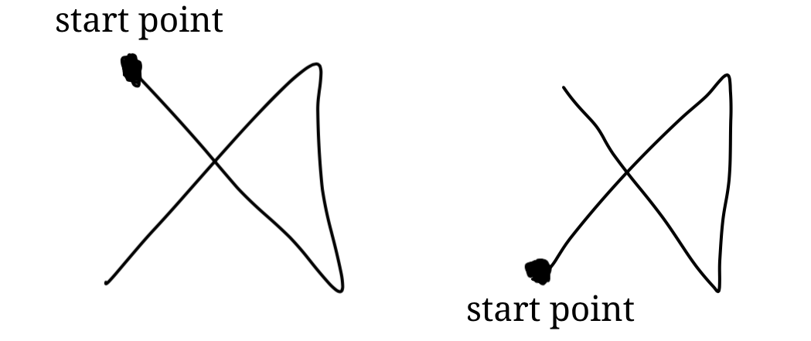
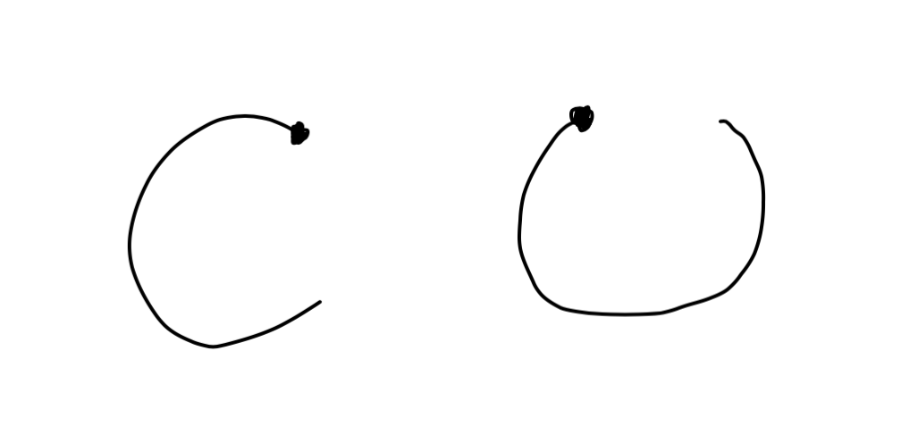
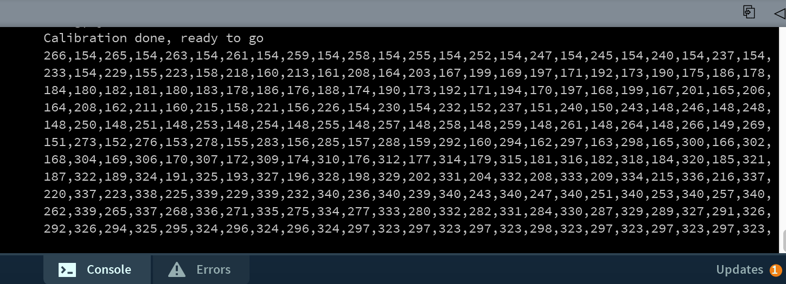
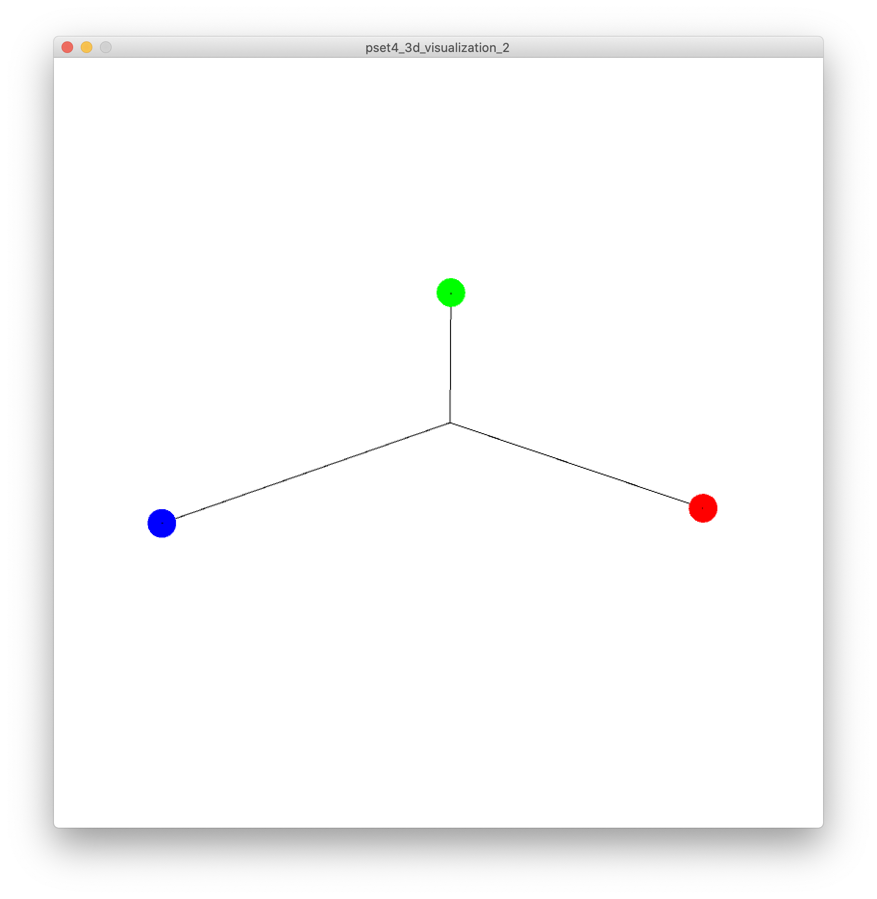
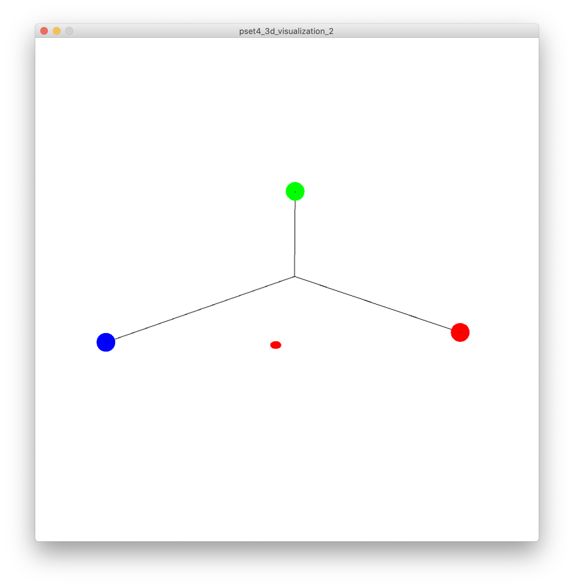

6.810 Engineering Interactive Technologies (fall 2020)
Problem Set Series: Multi-Touch Pad


Problem Set 4 (due Friday, Nov. 6, 2020, 11.59pm)
Now that you have the Processing code that reads and visualizes sensing data in 2D, you are ready to extend it with two more functionalities:
- (1) Gesture Recognition: Enable the multi-touch pad to recognize different finger gestures.
- (2) 3D Visualization: Render the signal strength as a 3D shape.
(1) Gesture Recognizer
Let's first build a finger gesture recognizer.
The goal here is to be able to draw with your finger onto your multi-touch pad and have the multi-touch pad recognize what was drawn. For instance, if you swipe from left to right, your code should recognize that you made this gesture and if you draw an 'A' your code should know that an 'A' was drawn.
Understanding the $1 Unistroke Recognizer
Luckily, you don't have to implement the gesture recognizer from scratch.
Instead, you can use the $1 Unistroke Recognizer, which is also available as a Processing library.
This gesture recognizer was first published at our HCI conference ACM UIST and you can find the UIST 2017 Paper here.
Before we get to the implementation, let's briefly review what gestures this recognizer can detect and what gestures cannot be detected.
What Gestures can the $1 Unistroke Recognizer Detect?
2D Recognizer: First, the $1 Unistroke Recognizer is a 2D recognizer. Therefore, you can use it for your 2D multi-touch pad but you cannot use it with a hardware setup, such as the Kinect, where you can move you finger in 3D space in the air.
Unistroke: Second, the recognizer is a 'unistroke' recognizer. What this means is that it can only recognize gestures that are made by one finger in one continous stroke. For instance, consider the 2 gestures shown below designed for the letter "A". The left one is written in one continous stroke and thus can be recognized by the $1 recognizer. The right one, however, is written in two separate strokes and thus cannot be recognized. Similarly, you can recognize a single finger swipe left/right gesture, but you cannot recognize a zoom gesture with two fingers since that would require combining two separate strokes into one gesture.

Stroke Direction: In addition, the algorithm recognizes the stroke direction, i.e. with which point/line you start your stroke. For example, the two gestures shown below are visually identical but in the first gesture we start on the top left, while in the second gesture we start on the bottom left. Therefore, although visually the same gesture, the $1 algorithm is able to distinguish them as two different gestures. Note that this is only possible because the algorithm ignores the stroke 'orientation'. If the algorithm would consider the stroke orientation, both gestures would be the same. (is this really true? I can't make them match up)

Stroke Orientation: In addition, the algorithm ignores the stroke "orientation" (what does ignore mean? it doesn't matter how it's oriented and it will still be recognized?).
However, it will likely recognize the 2 finger gestures shown below as the same gesture. (why? because it ignores orientation or it considers orientation?).

$1 Dollar: Finally, the recognizer is called "$1" because in machine learning terms, $1 is an instance-based nearest-neighbor classifier with a 2-D Euclidean distance function, i.e., a geometric template matcher.
Try the Gesture Recognizer for yourself on the Demo Webpage
We recommend before you move on, you try out the interactive demo of the $1 Unistroke Recognizer that you can find here on this website. Scroll down to the 'Demo' section and you see 16 different gestures you can draw into the gray window on the right side. Draw each of the gestures once to get a feel for how different gestures are designed and how well they can be classified. After you drew a gesture, you will see its classified name at the top of the window.

Processing Library for $1 Unistroke Recognizer
Lucky for us, the authors of the UIST'07 paper also provide a Processing library with all the functionality you saw above.
Start by importing the $1 Unistroke Recognizer library by going to Sketch -> Import Library and finding it through the search bar.

Next, import the $1 Unistroke Recognizer into your PSet3 Processing code.
import de.voidplus.dollar.*;
Construct a new object of the one dollar recognizer with:
OneDollar one = new OneDollar(this);
Add finger gesture
Next, you will create a new finger gesture.
For starters, we will use a circle gesture, which is one of the most reliable once that can be detected.
To create a new finger gesture, you can use the following function:
OneDollar.learn(String gesture-name, int[] x-y-coordinates);
To obtain the x-y-coordinates for your gesture you have two options:
- Finger on Multi-Touch Pad: You can use your finger and draw the pattern on the multi-touch pad while recording the x-y coordinates from the gesture start to end.
- Mouse on Screen: Alternatively (and perhaps more conveniently), you can use your mouse to draw onto the Processing Canvas and use the mouseDragged() function to record all the points of the mouse gesture.
Below you see a recording of all the coordinates for our circle gesture (for what gesture is this?).

Connect Finger Gesture to a Callback Function
Now that you have added a custom finger gesture, you next have to define which function should be called when the gesture is being detected. Such a function is called a callback function and it will be triggered every time the algorithm detects the corresponding finger gesture.
You can bind the finger gesture to a callback function via the following function:
OneDollar.bind(String gesture-name, String callback-function-name);
Does the function name above include the parameters and parenthesis?
Next, you need to implement the callback function.
The callback function always has to be in the format as shown below, i.e. contain the following parameters and return void.
The function name and parameter names, however, are up to you.
void foo(String gesture-name, float percentOfSimilarity, int startX, int startY, int centroidX, int centroidY, int endX, int endY){
// do something when the gesture is detected
}
The parameters contain the following:
Percent of Similarity: This is how confident the recognizer is that it actually detected the right gesture. If this contains '100' the algorithm is very confident, however, if it contains '50' the algorithm is not very confident that this is correct. is there a lowest possible value?
Start X/Y: This is the start position of the gesture on the multi-touch pad are these absolute values on the multi-touch pad, i.e. 0,0 is top left corner? how does it know this?
Centroid X/Y: what is this good for?
End X/Y: same question as above.
Tracking the finger gestures
Now that you have defined how your gesture looks like and what function should be called when it is detected, you still have to tell your code when it should start tracking finger input.
You can start the tracking via the following function:
OneDollar.track(int x-coordinate, int y-coordinate);
what is x, y here? I don't understand.
how do I stop tracking?
when do we want to start tracking? only when a finger touch point is recognized through blob detection I guess?
Visualize Gesture Detection Result
Finally, once your gesture is detected, your callback function should visualize the detected gesture.
You can do this by writing the name of the detected gesture into the Processing UI window as shown in the top left corner of the images below.
can we update these images to show the drawn gesture as well?

Create 3 Different Gestures
Implement 3 different finger gestures that can be recognized by your multi-touch pad.
For example, you can implement finger input for recognizing letters (A, C etc.), 2D shapes (triangle, circle etc.), and symbols (check mark etc.).
Note that in good gesture design, the gesture should be related to what function is being called. For instance, you cannot draw a 'star' and associate it with a 'smile'. Instead, it would be better to draw a 'half circle', which more closely resembles a 'smile'. Similarly, gestures cannot be too abstract. For instance, you cannot have your finger draw one straight line on the multi-touch pad and the system recognizes it as 'fish'. Instead, there are better one-stroke gestures that could represent a fish outline.
Take a short video of your gesture recognizer showing how you perform all three different gestures and how they are correctly classified and upload this video to your google drive.
(2) Visualize the touching data in 3D
In this part, you will be implementing the multi-touch pad touching data in 3D, where the "height" of the roughly reflects how "hard" you are touching (remember in PSet3, the brightness of the 2D blob area roughly reflects how "hard" you are touching).


Start by downloading the skeleton code for the PSet4 3D visualization from here.
Once you open up the skeleton code, you will notice that it is quite similar to the PSet3 skeleton code.
As a matter of fact, if you have the PSet3 all implemnted corrected, you already have most of the code written!

For the functions that share the same name with PSet3 (i.e. readSerial(), setBaseLine(), substractBaseLine(), setColors(), and interpolate()), you can directly copy your PSet3 code into the corresponding functions.
For this part of the PSet, apart from the initialization in the setup() function, you are going to do the following three steps:
- Draw XYZ axes for 3D visualization
- Implement camera view and control in via keyboard
- Update the 3D visualization based on interpolated PImage (i.e. scaledbc)
Draw XYZ axes for 3D visualization
You will start by drawing out XYZ axes for 3D visualization in the drawAxis() function.
You can draw them as a standard Cartesian coordinate system.
The length of the X & Y axes should be the width and height of your interpolated PImage.
The length of the Z axes should be slightly over the pixel value range of your interpolated PImage for better visualization.
Once you finish the drawAxis() function, you should have something look like this (notice that the length of the X,Y,Z axes in the following image might not be accurate):

Implement camera view control via keyboard
In this part, you will be implementing an active camera view, which has the ability to change in zoom in/out, height in Z-axis and rotation in XY-plane.
The camera view will be controlled via keyboard buttons.
You should first initialize the "camera view" in Processing with the following method:
camera(float eyeX, float eyeY, float eyeZ, float centerX, float centerY, float centerZ, float upX, float upY, float upZ);
It sets the position of the camera through setting the eye position, the center of the scene, and which axis is facing upward.
Moving the eye position and the direction it is pointing (the center of the scene) allows the images to be seen from different angles.
You can also set the frame rate for better performance (e.g. if you are experiencing sketch laggs) via frameRate(int rate) function.
For more details about the camera in Processing, please refer to the offical documents here.
You will implement the camera view control so that:
- press key "Q" and "E" control change in camera zoom in / out
- press key "W" and "S" control change in camera height in Z-axis
- press key "A" and "D" control change in camera rotation in XY-plane
The changes in camera view point should look like something in the following.
Change in zoom in/out:


Change in height in Z-axis:


Change in rotation in XY-plane:


Update 3D visualization
The last part of the 3D visualization is to actually implement the 3D visualization based on your intepolated PImage.
Recall from the PSet 3, we intepolated the 9x8 multi-touch pad touching data into a much larger PImage and assign the intepolated value pixel by pixel.
We will be implementing something quite similar here, except the intepolated value now become the "height" (i.e. z-axis coordinate) + color.
You will implement the 3D visualization as a set of 3D points, where the X,Y coordinates are the row & column number of the pixel on PImage, and the Z coordinate the intepolated value of the pixel.
You will also implement a color gradient (of your choice) that represents the "height" (i.e. z-axis coordinate) information.
You might find your old friend map() to be helpful during some value assignments.
The resulting 3D visualization should look like something in the following.
No finger touching:


One finger touching:
Two fingers touching:


Upload your Processing Code and Pictures of your Visualization
For grading, please upload the following to your google drive student folder:
- Finger Gesture Recognizer
- the .pde file of your Processing program
- a mock-up drawing of your selected finger gestures (at leaset 3 to get the full points)
- 3 photos showing your Processing UI successfully recoginizes 3 different finger gestures
- a short video showing your Processing UI successfully recoginizes 3 different finger gestures (take the video so that the multi-touch pad and Processing Window are seen at the same time, you can try multiple times)
- 3D Visualization
- the .pde file of your Processing program
- 3 photos showing your Processing UI when no finger, one finger, and two fingers touching the multi-touch pad
- a short video showing your Processing UI when no finger, one finger, and two fingers touching the multi-touch pad (take the video so that the multi-touch pad and Processing Window are seen at the same time)
In addition, for pset4 you will create some visual materials to showcase your multi-touch pad. These will be spread over the next couple of weeks (you will see them on the friday lab schedule) and are not due at the deadline.
- (3) Rotoscope: 2D Drawing of your Multi-Touch Pad
- (4) Photos: High Quality Photo taken with a Backdrop
- (5) Video: A short video taken with a backdrop with at least 3 different shots cut together
Grading
We will give 25 pts in total:
- 5 pts: have 3 different finger gestures implemented.
- 5 pts: the system correctly recognize all 3 different finger gestures and update the UI accordingly.
- 5 pts: XYZ axes correctly draw for 3D visualization and update correctly with the active camera view.
- 5 pts: camera view control correctly implemented with ability to change in zoom in/out, height in Z-axis and rotation in XY-plane.
- 5 pts: 3D visualization correctly implemented and updates with the touching data (and can at least visualizes 2 fingers touching simultaneously.
- the .pde file of your Processing program
- a mock-up drawing of your selected finger gestures (at leaset 3 to get the full points)
- 3 photos showing your Processing UI successfully recoginizes 3 different finger gestures
- a short video showing your Processing UI successfully recoginizes 3 different finger gestures (take the video so that the multi-touch pad and Processing Window are seen at the same time, you can try multiple times)
- the .pde file of your Processing program
- 3 photos showing your Processing UI when no finger, one finger, and two fingers touching the multi-touch pad
- a short video showing your Processing UI when no finger, one finger, and two fingers touching the multi-touch pad (take the video so that the multi-touch pad and Processing Window are seen at the same time)